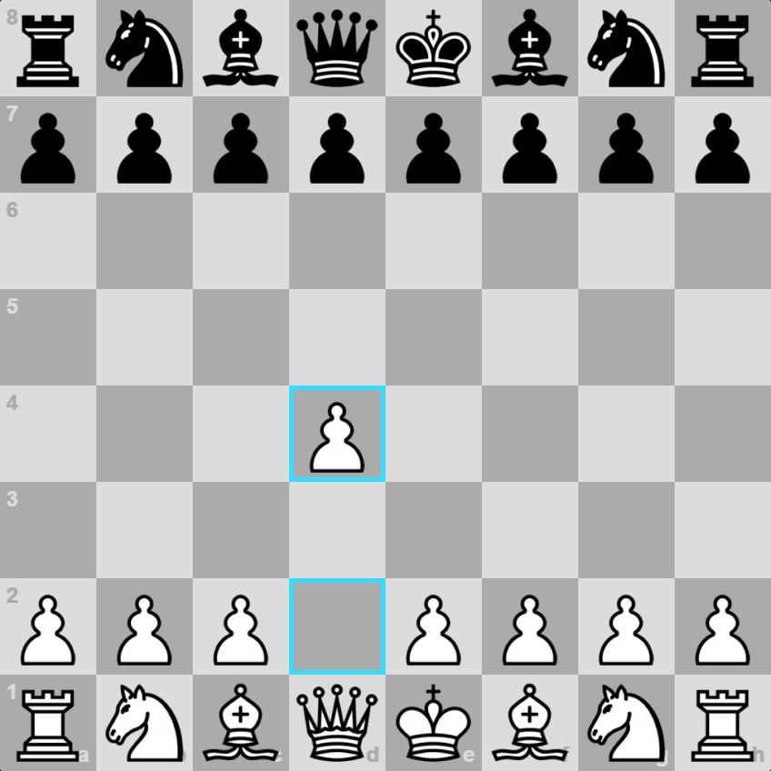
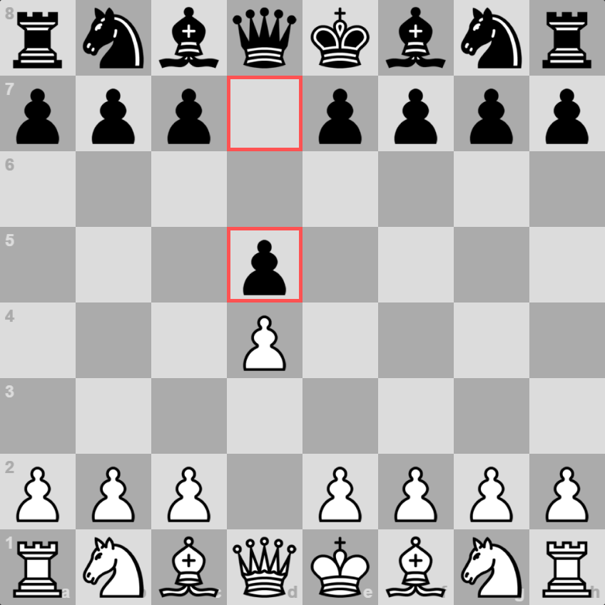
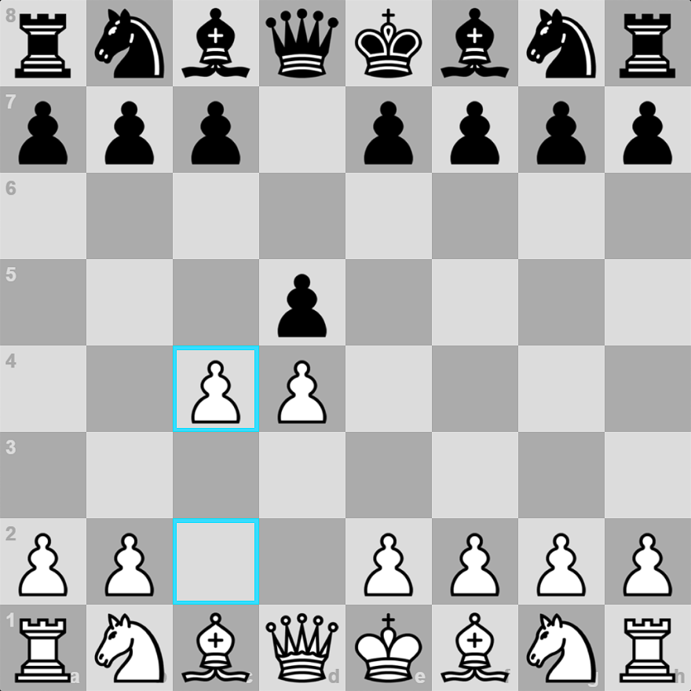
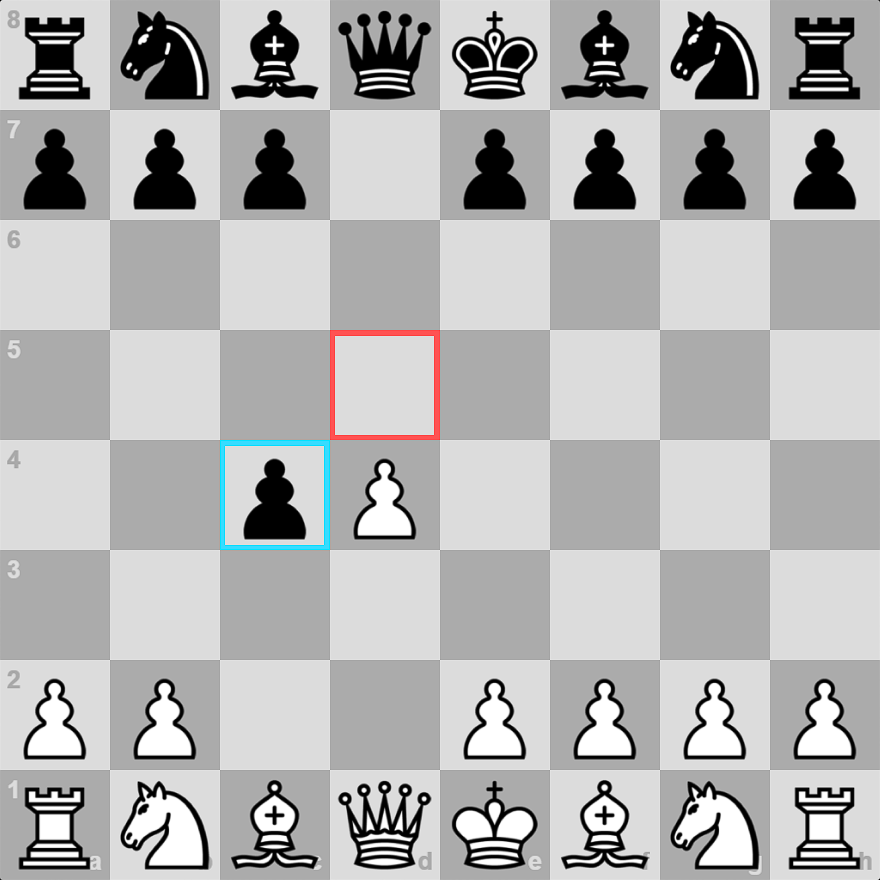
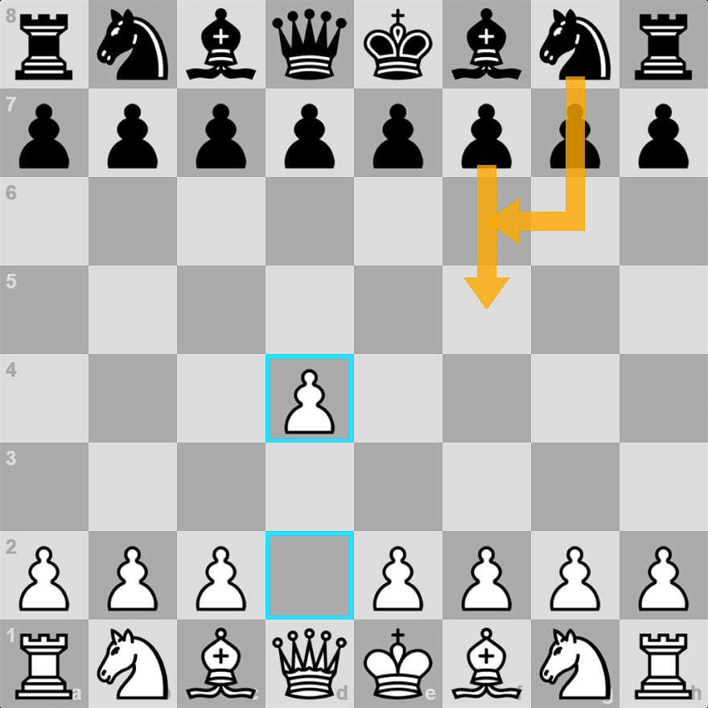
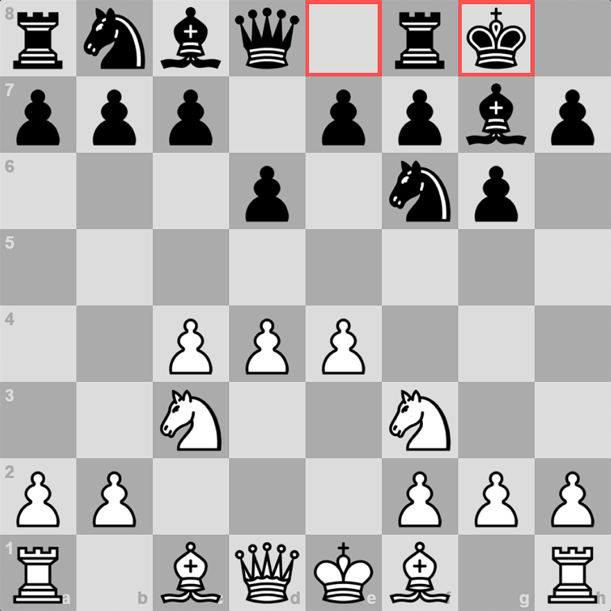
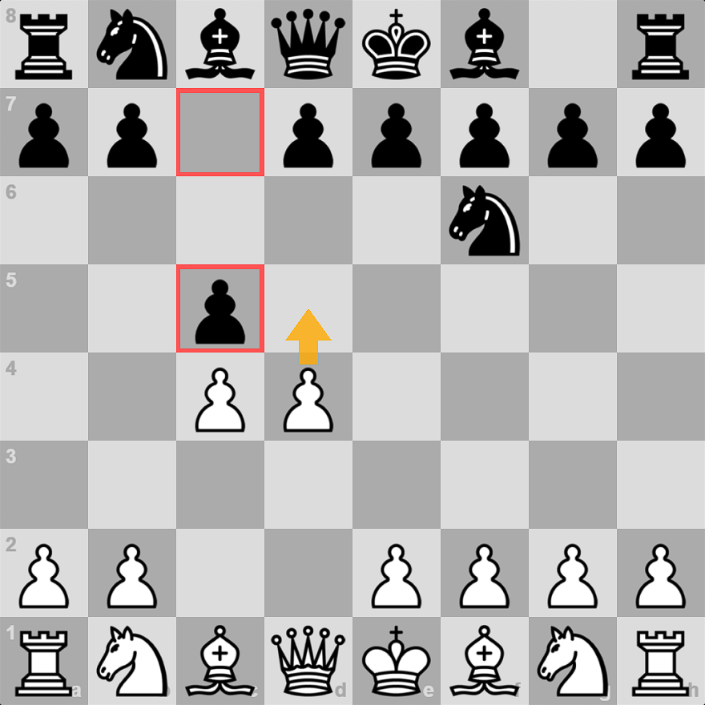

The Queen's Pawn Opening, starting with 1. d4, is one of white's most popular and sound opening moves.
By: Fabian Steineck
February 28, 2023
chessstrategy gameschess tactics

Screenshot by Fabian
White seizes control of the center and establishes development lines for his pieces. The Queen's Pawn Opening
clearly follows the Chess Opening Principles. Many modern Grandmasters start their chess games by moving the
d-pawn to the center of the board.
Unlike the King's Pawn Opening, the Queen's Pawn is already defended (by the queen) when it arrives in the
center of the board, so any threat to this pawn does not have to be addressed immediately.
This provides each player with more flexibility than a King's Pawn opening. Many opening systems classified as
Queen's Pawn Openings are defined more by their ideas than by specific move orders - though sharp, precise
variations do exist!
The Queen's Pawn Opening can lead to a variety of different opening systems. I'm going to divide them into two
categories:
• Black places their own Queen’s Pawn in the center with 1…d5, equalizing control of the center.
• Black does not play the move 1…d5 and seeks to contest the center by other means.
The Symmetrical Queen’s Pawn Opening: 1. d4 d5

Screenshot by Fabian
If white’s first move is good, it’s easy to see that black’s first move must also be good for the same reasons!
Both sides have laid a claim to the center.
White’s two main choices are to play the Queen’s Gambit with 2. c4 – fighting for more space and pressuring
black’s central pawn – or to play a so-called “System Opening,” where white develops calmly without generating
pawn tension.
The Queen’s Gambit: 1. d5 d5 2. c4

Screenshot by Fabian
By far white's most popular response to the symmetrical Queen's Pawn Opening is the Queen's Gambit. Because it
is difficult to involve the e-pawn in the fight for the center early on, the c-pawn becomes crucial in the
struggle for a space advantage.
At first glance, however, this move appears to be risky - isn't the c4 pawn undefended?
It is, but consider the implications of 2...dxc4:

Screenshot by Fabian
• Black's pawn no longer controls the center. White will most likely be able to e4 sooner or later.
• Black's c4 pawn is vulnerable. After white moves the e-pawn, white's light-squared bishop will attack this
pawn, which will be difficult to defend. White will almost always win their pawn back.
Because of these two factors, the Queen's Gambit is the most popular pawn sacrifice in all of chess opening
theory. Black frequently declines the sacrifice, allowing the white c-pawn to remain strong in the center of the
board.
White Plays a “System” Opening
If white does not want to create early central pawn tension by playing the aforementioned Queen's Gambit, he
has a number of options.
The Queen’s Pawn Opening is somewhat unique in that White can play some of these systems almost without regard
to what black does in the meantime, thanks to the heavily defended queen’s pawn in the center.
For example, let’s consider the London System – perhaps the most popular of these “System” openings. White
develops their dark-squared bishop to f4 before putting playing e3, c3, and finishing development:
White can play these same eight moves against almost anything black throws at them!
To say the least, many of these System openings aren't the most daring attempts at gaining a significant
advantage with white. And, despite the allure of skipping opening memorization entirely and playing a System
Opening with white, I don't recommend these openings for beginners for two reasons:
• Playing the same few moves at the start of every game isn't a good way to broaden your chess horizons and
learn to play a variety of positions.
• There are almost no early tactics, threats, or pawn tension in these openings. It is critical to understand
and calculate tactics!
Nonetheless, System openings continue to be popular at all levels of chess.
Other System Openings include:
The Colle System is similar to the London System, but it does not include Bf4.
The Colle-Zukertort System is similar to the London System, except that the dark bishop moves to b2 instead of
b1.
The Torre Attack is similar to the London System, except that the dark bishop moves to g5.
The Stonewall Attack - White quickly plays f2-f4, hoping to bind the dark squares completely.
With 2. Nc3, the Veresov Attack is launched. It is uncommon to block one's c-pawn in a Queen's Pawn Opening, but
white
may intend to do so by playing the Blackmar-Diemer Gambit!
The Alternative: Black does not play 1…d5

Screenshot by Fabian
If black does not want the stable center of a Symmetrical Queen's Pawn Opening, he can avoid moving the
d-pawn on move one. Many of the openings in this section are considered more ambitious by black, but that does
not mean they are without risk!
The majority of black's most popular setups begin with 1...Nf6. This is a very logical move - it makes sense
to control the e4-square to prevent white from playing an immediate 2. e4 and seizing the entire center.
Here are some examples of popular 1...Nf6 openings:
Black threatens to double white's pawns in the Nimzo-Indian by capturing on c3.
1. d4 Nf6 2. c4 g6 3. Nc3 Bg7 4. e4 d6 5. Nf3 0-0 – The King’s Indian Defense

Screenshot by Fabian
White is given a large portion of the central space in the King's Indian, but black quickly castles and will
strike back in the center with...e5 or...c5!
We would enter the Grunfeld Defense if black instead played 3...d5 to strike at white's center.
1.d4 Nf6 2.c4 c5 - The Benoni Defense

Screenshot by Fabian
Black challenges the center with the c-pawn in the Benoni Defense. As is common in Queen's Pawn openings,
black is
unconcerned about the enemy d-pawn capturing his c-pawn (see Queen's Gambit above). White frequently advances
by playing 3. d5, gaining space.
Black has some unusual options involving the first move 1...Nf6. The Budapest Gambit, for example, is 1. d4
Nf6 2. c4 e5!?
It is also worth noting that white is not required to play the standard move 2. c4. For example, the
Trompowsky Attack is 1. d4 Nf6 2. Bg5.
What are some of black's alternatives to 1...Nf6?
1.d4 f5 is the Dutch Defense.
With the f-pawn, Black seizes central space and controls the e4 square! Moving the f-pawn in the opening
always has
drawbacks (it exposes the "King's Weak Diagonal"), but it can be an ambitious attempt by black to balance the
game and fight for space.
A plethora of other first moves by black are reasonable (even the infamous Englund Gambit of 1...e5?! has
been tried), but many of them necessitate some knowledge of transpositions! Consider the following example: 1.
d4 e6:
Screenshot by Fabian
These moves do not constitute an opening system in and of themselves, but the situation will become clearer
in the coming moves. Some common outcomes include:
1. d4 e6 2. e4 and we have transposed to the French Defense, a King’s Pawn Opening.
1. d4 e6 2. c4 d5 leads to a variation of the Queen’s Gambit – just as if the game had begun 1. d4 d5 2. c4
e6!
1. d4 e6 2. c4 Nf6 3. Nc3 Bb4 and we’re back to a Nimzo-Indian Defense
1. d4 e6 2. c4 Nf6 3. Nc3 d5 and once again we have a line from the Queen’s Gambit, characterized by both
d-pawns in the center and white’s pawn on c4.
Needless to say, it can be challenging to play such a move unless you’re comfortable with all of the other
opening systems it can lead to.